Case study 04 — HR & people operations · Web app
Everything a growing team needs — from hire to handover, in one calm workspace for HR and every employee.
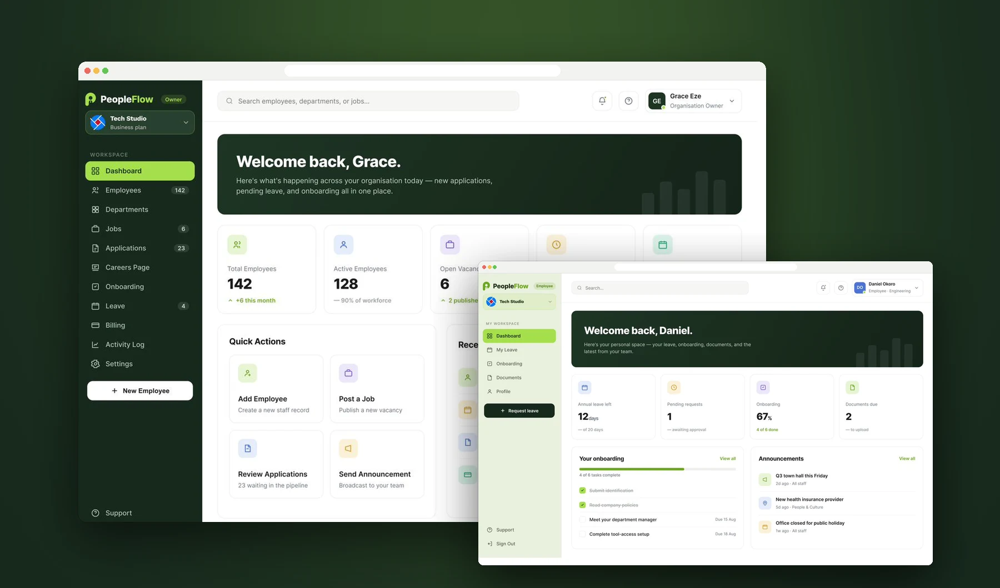
Screens designed, from sign-up to settings
Role-based workspaces: HR and employee
Stages in the hiring pipeline
Admin modules in one sidebar
For a growing company, people operations is usually spread across spreadsheets, email threads and chat: who’s on leave, which documents are missing, where a candidate is in the process. PeopleFlow gives HR one place to hire, onboard and manage the team — and gives every employee a clear, personal space for their own leave, tasks and documents.
Post vacancies, collect applications and move candidates through a visual pipeline.
Checklists HR sets up once and every new hire works through.
Profiles, documents, departments and status in one directory.
Balances, requests and approvals, with the cost shown before anyone submits.
Company news that lands in every employee’s workspace.
An activity log of every action, plus roles, notifications and security.
One product, two very different people using it.
HR and employees need different things from the same data. So PeopleFlow has two workspaces built from one set of components — here they are side by side.
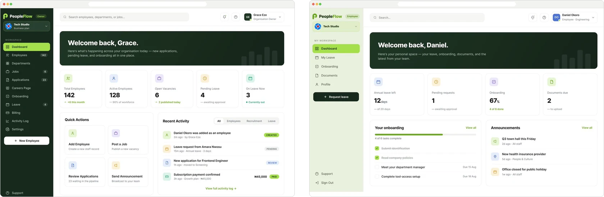
Admins work on a dark forest sidebar; employees on a light mint one. You always know which side of the product you’re on.
Both workspaces share the same cards, buttons, tables and status pills, so the system stays small and consistent.
Employees never see billing, the audit log or anyone else’s records — their sidebar has six items, not ten.
The product follows a person through the company — and each stage hands off cleanly to the next.
Vacancies drafted, published and closed in one list.
A six-stage pipeline with notes, answers and CVs.
Tasks the new hire completes, tracked by HR.
Records, departments, balances and approvals.
Every action recorded; access kept in check.
Hiring starts with a vacancy and ends with a new employee record — and every step between lives in PeopleFlow.
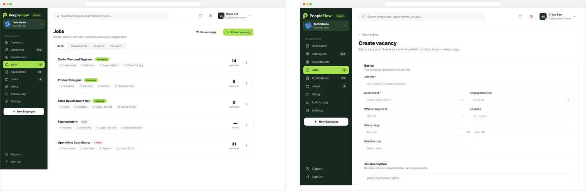
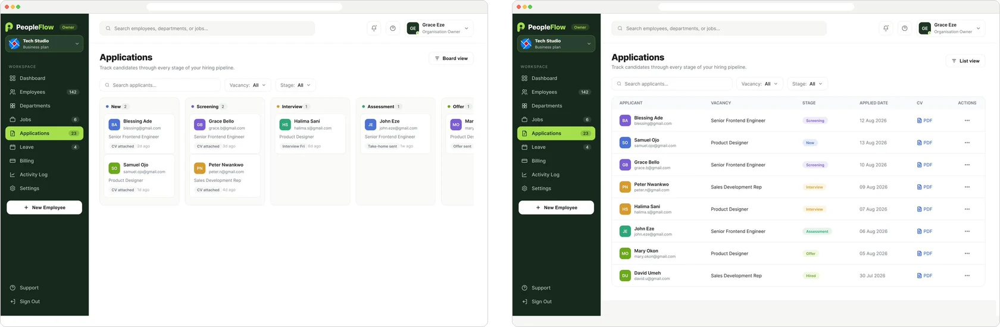
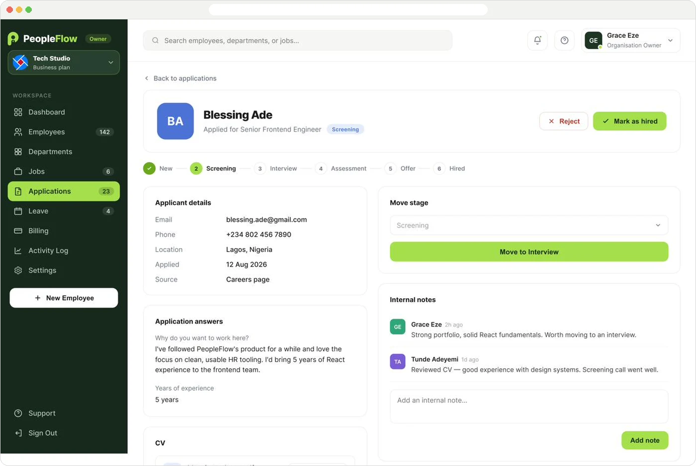
Each employee is a single, complete record — and every team has a home.
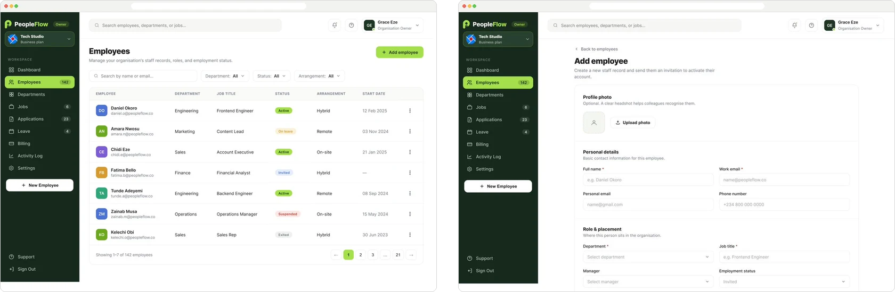
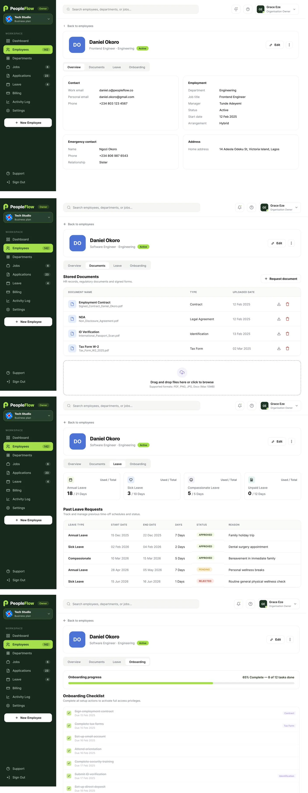
Overview. Contact, employment, emergency contact and address — the record HR used to chase across emails.
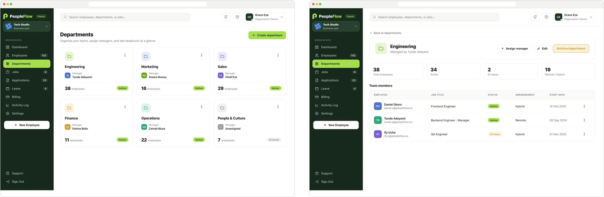
HR sets up the tasks once; the new hire works through them. Both sides see the same progress, so nobody has to chase anybody.
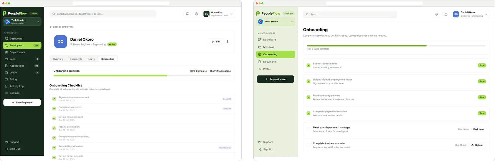
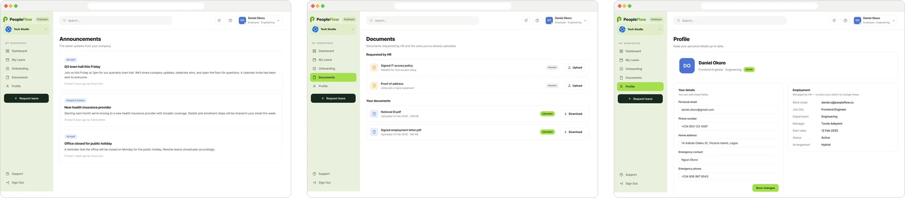
Leave is the feature people use most, so both sides of it had to be fast and clear.
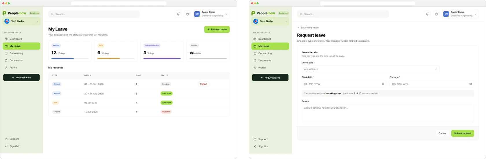
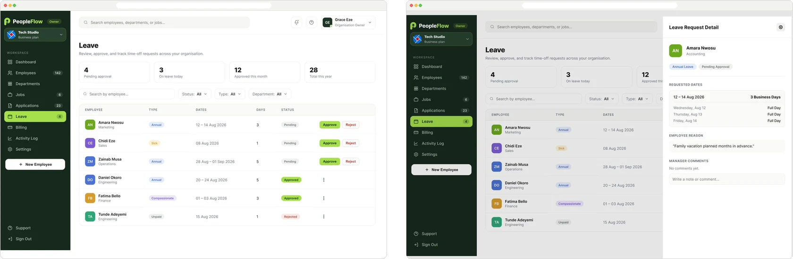
The quiet screens that make HR software trustworthy.
HR handles sensitive data, so the product shows who did what — and gives owners real control over access and security.
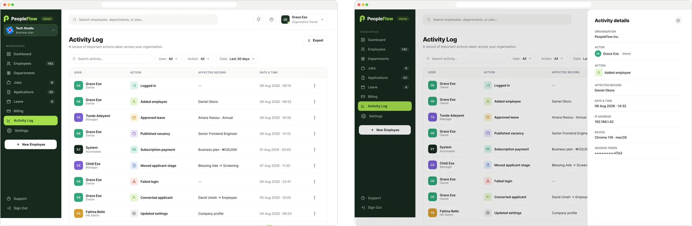
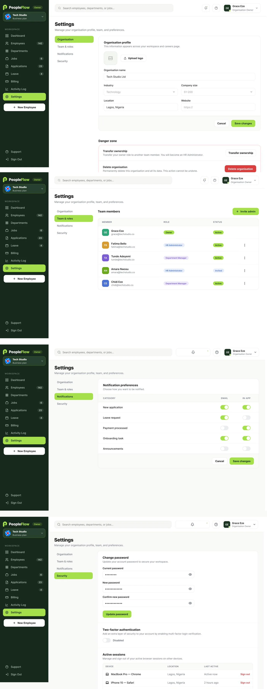
Organisation. Company profile, industry, size and location — with transfer ownership and delete organisation kept apart in a danger zone.
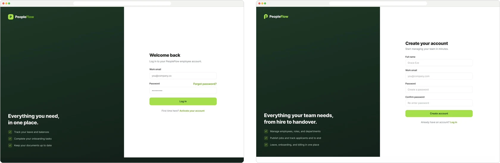
Forest for structure, lime for action, and status colours that always mean the same thing.
31 screens across two role-based workspaces, a shared component set, and a complete hiring-to-handover flow — ready to hand to development.
[The design decision Victoria found hardest on PeopleFlow, and how she solved it.]
[What designing for two roles taught her.]
[What she’d test or build next — e.g. payroll or performance reviews.]
A women’s wellness app for Nigerian women — from puberty to menopause, in one private place.
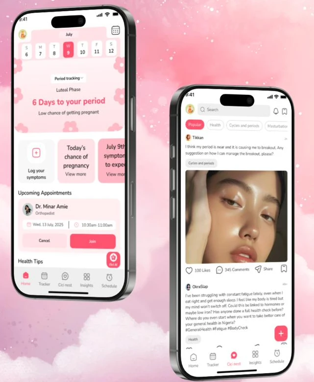